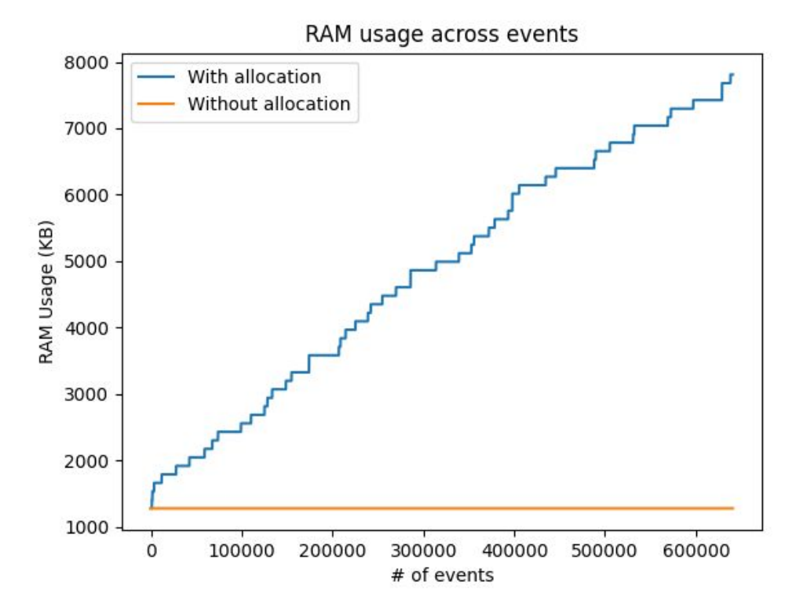
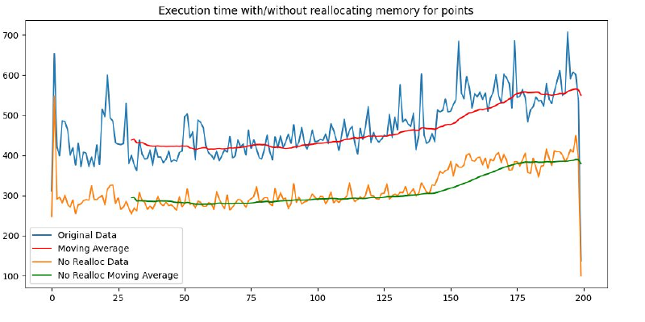

Event-Based Drone Tracking
Overview
Event cameras record asynchronous brightness changes instead of transmitting every pixel in every frame [1]. This project asks whether that sparse stream is sufficient to recover coherent drone motion without reconstructing conventional video frames or running a learned object detector.
We worked with a 1280 x 720 recording containing 7,139,453 events over 139.65 seconds. The demonstration follows a 10-second flight segment and overlays the trajectory and current velocity direction recovered by the tracker.
Event Camera Primer
Each pixel in an event camera operates independently. When the local change in brightness crosses a contrast threshold, the pixel emits an event rather than waiting for the next image frame. The recording is therefore an ordered stream of four-element tuples:
e_i = (t_i, x_i, y_i, p_i)
Here, t_i is the event timestamp, (x_i, y_i) identifies the pixel,
and p_i is its binary polarity. An ON event indicates an increase in
brightness, while an OFF event indicates a decrease. A single tuple records only that a
change occurred at one location; it does not contain a complete image or identify the
object that caused the change.
We recover spatial structure by accumulating events over short temporal windows. Unlike a conventional frame, these windows contain only pixels that changed, which preserves the sparse input used by the rest of the tracking pipeline.
Why Sparse Events
A small moving target occupies only a fraction of each image, so repeatedly processing the static background is wasteful. Event sensing shifts the input toward the part of the scene that changes and preserves fine temporal information. The stream is not a detection by itself, however: sensor noise, background motion, and unrelated edges can all produce events. The central problem is therefore to turn local activity into a stable identity over time while keeping the computation proportional to that activity.
From Events to Motion
We first restrict processing to the flight region, x = 400-900 and y = 100-720, and keep positive-polarity, or ON, events. We then collect those events in 50 ms windows. Within each window, nearby points join a spatial group under an L1-distance threshold of 40 pixels; groups with fewer than 10 events are rejected before tracking. This produces a small set of time-local detections without constructing an image frame.
Building a Continuous Track
Clustering gives us possible drone locations in each 50 ms window, but every window is initially independent. We represent each cluster by its centroid. A track is a running history of these centers together with an estimate of their velocity. The goal is to decide which new center continues each existing track.
For each active track, we first estimate where its center should appear 50 ms later by assuming that its current speed and direction remain unchanged over that short interval. We then compare every predicted position with every new cluster center. A one-to-one matching procedure, the Hungarian algorithm, chooses the set of pairings with the smallest total pixel distance. We accept a pairing only when the two positions are within 100 pixels; this distance limit prevents unrelated activity from taking over a track.
Once a pair is accepted, the movement between the old and new centers gives a velocity in pixels per second. To reduce jitter, we blend 30% of this new estimate with 70% of the previous velocity. An unmatched detection starts a new candidate track, while an existing track can remain unmatched for up to three windows before it is removed. A candidate must receive detections in three windows before it can be selected, and the stable track supported by the largest current event cluster is treated as the drone.
Keeping the Tracker Lightweight
The tracker reduces work before matching begins. The event camera omits unchanged pixels; we then keep only the flight region and ON events, remove small clusters, and reject detections that are too far from a predicted position. As a result, only a few cluster centers need to be compared in each 50 ms window.
We also avoid storing an image representation for every track. A track keeps only its center, velocity, age, missed-window count, and recent path. Old tracks are removed, and visualization is limited to the most recent 50,000 events. This keeps the working data bounded, but it assumes that the drone remains the largest consistent moving cluster. Scenes with several similar moving objects would need a stronger way to distinguish them.
Preparing for Streaming
In the related astronomical-tracking system, the C/C++ event pipeline ran in real time on a Raspberry Pi 4 at 1.5 GHz [2]. Its Broadcom BCM2711 processor contains four 64-bit Arm Cortex-A72 cores [3], giving the streaming work a concrete edge-computing target.
We profiled the shared online clustering step on a longer recording of stars and satellites. Although the tracking target is different, the underlying operation is the same: events arrive continuously and must be assigned to nearby clusters. The longer trace let us measure the memory and processing cost of the event processor.
The first version kept every point assigned to a cluster. Its memory therefore grew with the recording, and expanding those point arrays repeatedly added processing time. We replaced the point history with running center and velocity updates, used 32-bit timestamps and 16-bit coordinates, and kept memory nearly constant as more events arrived.
We then divided the sensor into a 3 x 3 grid so a new event searches nearby clusters instead of every active cluster. For continuous input, one thread loads fixed batches of 500 events while another processes them.


These plots measure the shared C event processor. They show that removing the growing point history both bounded memory use and reduced the time needed to process each batch.
Takeaway
This project shows that a sparse event stream can be converted into a continuous drone path with a compact, non-neural tracker. In the selected 10-second segment, the same track follows the drone through the turn after initialization. The processor also avoids growing cluster memory and unnecessary searches, which are important steps toward streaming on constrained hardware.
References
- G. Gallego et al., Event-based Vision: A Survey , IEEE TPAMI, 2022.
- S. S. Yadav, Ajay Vikram P, A. M. D, C. S. Seelamantula, and C. S. Thakur, Asynchronous High-Speed Tracking of Astronomical Objects using Neuromorphic Camera for Edge Computing , ICASSP 2026.
- Raspberry Pi Ltd., BCM2711 processor documentation .